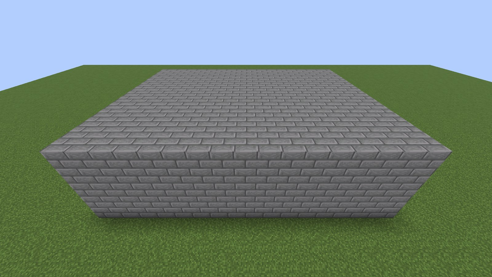
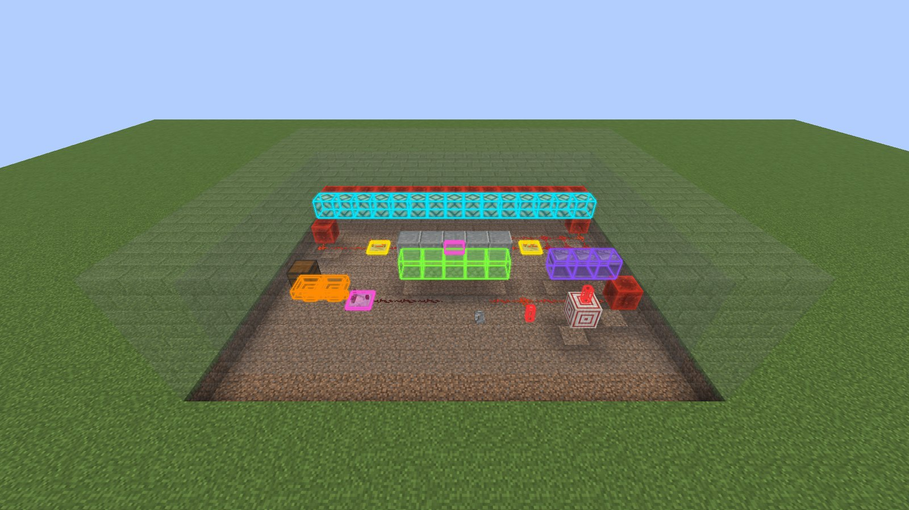
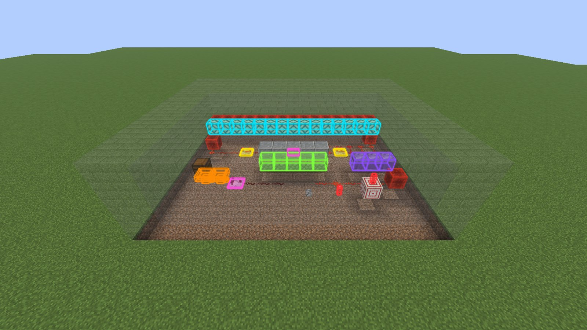
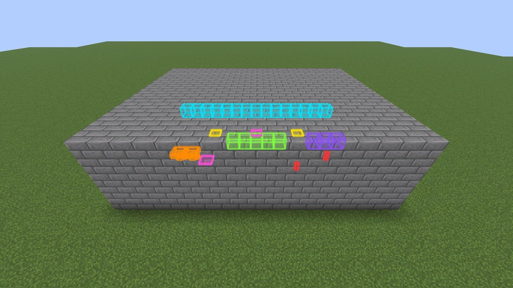
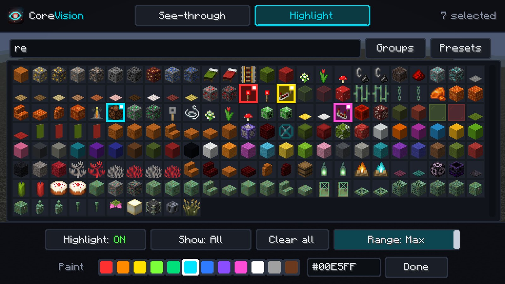

See through walls. Highlight what matters.
Pick any block and make it see-through. Light up the blocks you care about through walls, each in its own colour. Built for redstoners who are tired of digging into their own builds.


WithoutWith CoreVisionDrag to compare. Same bunker, same camera.
Recorded in-game with the mod running.
Two tools that work together: see-through blocks and through-wall highlights, plus everything to set them up fast.
Choose any blocks and make them transparent, from barely faded to almost invisible. Everything else stays solid.
Glowing outlines show the blocks you pick through any wall, with a range from 16 blocks up to your full render distance.
Paint each highlighted block its own colour from the palette or with any hex code, so repeaters, observers and pistons are easy to tell apart.
Blocks next to see-through ones get lit as if the sun reaches them, so the inside of a sealed room is bright, not pitch black.
Add whole groups like redstone components or stone types in one click, and save setups as presets you can switch between with a key.
Works with the vanilla renderer and with Sodium. Chests, signs and other block entities fade too, and water keeps its sides.

Turn the walls of a build see-through and the circuit inside shows up right away. Set exactly how transparent with a slider.

Highlights draw on top of everything, so you can spot every repeater, comparator or piston in a build from the outside.

Press V to open it. Search blocks by name or ID, click to add them, and see the count update as you go.
Change any of them in Options, then Controls, under CoreVision.
Click any picture to see it full size.
CoreVision is a normal Fabric mod. If you already use Fabric, just drop the jar in.
Get the Fabric Loader for your Minecraft version.
Put Fabric API for the same version in your mods folder.
Download the CoreVision jar for your version and put it in the same mods folder.
Launch the Fabric profile, join a world and press V.
Play fair on servers. CoreVision is made for building and fixing your own redstone. Because it can show blocks through walls, many multiplayer servers do not allow mods like it. Check a server's rules before you use it there. Singleplayer and your own worlds are always fine.
Yes, on every supported version. CoreVision works with the vanilla renderer and with Sodium. It does not need Sodium, so use it with or without.
No. It is client-side only. Install it in your own game and nothing is needed on the server.
In config/redstone-vision.json inside your Minecraft folder. Your blocks, colours, presets and keys stay saved between sessions.
Minecraft 26.3, 26.2, 26.1 (up to 26.1.2), 1.21.11, 1.21.1 (and 1.21) and 1.20.1 (and 1.20), all with Fabric Loader and Fabric API. Pick your version above the download button: each version has its own jar, so use the one that matches your game. The official launcher already includes the right Java.
Make sure see-through is switched on (press B) and that at least one block is selected in the See-through tab. If the transparency slider is at 0%, the blocks will look normal.